Newest Results
jliucx
2024-12-5
Last updated: 2024-12-28
Checks: 6 1
Knit directory: Getting_started/
This reproducible R Markdown analysis was created with workflowr (version 1.7.1). The Checks tab describes the reproducibility checks that were applied when the results were created. The Past versions tab lists the development history.
Great! Since the R Markdown file has been committed to the Git repository, you know the exact version of the code that produced these results.
Great job! The global environment was empty. Objects defined in the global environment can affect the analysis in your R Markdown file in unknown ways. For reproduciblity it’s best to always run the code in an empty environment.
The command set.seed(20240712) was run prior to running the code in the R Markdown file. Setting a seed ensures that any results that rely on randomness, e.g. subsampling or permutations, are reproducible.
Great job! Recording the operating system, R version, and package versions is critical for reproducibility.
Nice! There were no cached chunks for this analysis, so you can be confident that you successfully produced the results during this run.
Using absolute paths to the files within your workflowr project makes it difficult for you and others to run your code on a different machine. Change the absolute path(s) below to the suggested relative path(s) to make your code more reproducible.
| absolute | relative |
|---|---|
| /project/xuanyao/jiaming/Getting_started | . |
| /project/xuanyao/jiaming/Getting_started/output/both_trans_author_filtered_cell/results_run_discovery_analysis.rds | output/both_trans_author_filtered_cell/results_run_discovery_analysis.rds |
| /project/xuanyao/jiaming/Getting_started/output/both_trans_author_filtered_cell/results_run_calibration_check.rds | output/both_trans_author_filtered_cell/results_run_calibration_check.rds |
Great! You are using Git for version control. Tracking code development and connecting the code version to the results is critical for reproducibility.
The results in this page were generated with repository version b775a9e. See the Past versions tab to see a history of the changes made to the R Markdown and HTML files.
Note that you need to be careful to ensure that all relevant files for the analysis have been committed to Git prior to generating the results (you can use wflow_publish or wflow_git_commit). workflowr only checks the R Markdown file, but you know if there are other scripts or data files that it depends on. Below is the status of the Git repository when the results were generated:
Ignored files:
Ignored: .Rhistory
Ignored: .Rproj.user/
Ignored: analysis/job-info.err
Ignored: analysis/job-info.out
Ignored: analysis/run.sh
Ignored: analysis/run_R.sh
Untracked files:
Untracked: analysis/sceptre_singleton.R
Untracked: analysis/sceptre_singleton.Rmd
Untracked: analysis/sceptre_threshold.Rmd
Untracked: code/debug.Rmd
Untracked: code/fit_skew_normal.cpp
Untracked: code/minp.R
Untracked: code/newest.R
Untracked: code/newest.err
Untracked: code/newest.out
Untracked: code/permutation.err
Untracked: code/permutation.out
Untracked: code/t_test.cpp
Untracked: code/test.err
Untracked: code/test.out
Untracked: code/test_gene_module_reduced.R
Untracked: code/test_gene_module_reduced.Rmd
Untracked: code/test_gene_p.R
Untracked: code/test_gene_p.Rmd
Untracked: data/
Untracked: gene_wise_p_test_10000.csv
Untracked: output/SNP_gene_statistics_sceptre_approximation.csv
Untracked: output/SNP_gene_statistics_sceptre_no_approximation.csv
Untracked: output/SNP_p_no_approximation.csv
Untracked: output/SNP_p_t_statistics_approximation.csv
Untracked: output/both_trans_author_filtered_cell/
Untracked: output/both_trans_author_permutation/
Untracked: output/debug/
Untracked: output/newest/filter_cell/
Untracked: output/newest/try2/
Untracked: output/try_sceptre_skew_fit_normalized_threshold_quantile_transform.csv
Unstaged changes:
Modified: .gitignore
Modified: analysis/TATES.Rmd
Modified: analysis/_site.yml
Deleted: analysis/create_grna_target_data_frame.Rmd
Modified: analysis/debug.Rmd
Modified: analysis/qqplot.Rmd
Modified: analysis/sceptre.Rmd
Modified: analysis/sceptre_example.Rmd
Deleted: analysis/seurat_example.Rmd
Modified: analysis/summary.Rmd
Deleted: analysis/try_Knit.Rmd
Deleted: analysis/try_rcc.Rmd
Modified: code/functions.R
Deleted: code/job-info.err
Deleted: code/job-info.out
Modified: code/plot.Rmd
Deleted: code/results.csv
Deleted: code/results_wilcox_pval.csv
Modified: code/run_R.sh
Modified: code/startover.R
Modified: code/test_gene_module.R
Modified: code/test_gene_module.Rmd
Deleted: code/try.R
Deleted: code/try.Rmd
Deleted: output/both_trans_author_threshold_0.05_2/plot_assign_grnas.png
Deleted: output/both_trans_author_threshold_0.05_2/plot_grna_count_distributions.png
Deleted: output/both_trans_author_threshold_0.05_2/plot_run_calibration_check.png
Deleted: output/both_trans_author_threshold_0.05_2/plot_run_discovery_analysis.png
Deleted: output/both_trans_author_threshold_0.05_2/plot_run_power_check.png
Deleted: output/both_trans_author_threshold_0.05_2/plot_run_qc.png
Modified: output/startover/test/gene_wise_p.csv
Modified: output/startover/test/minp.csv
Modified: output/startover/test/our_method.csv
Note that any generated files, e.g. HTML, png, CSS, etc., are not included in this status report because it is ok for generated content to have uncommitted changes.
These are the previous versions of the repository in which changes were made to the R Markdown (analysis/new_model.Rmd) and HTML (docs/new_model.html) files. If you’ve configured a remote Git repository (see ?wflow_git_remote), click on the hyperlinks in the table below to view the files as they were in that past version.
| File | Version | Author | Date | Message |
|---|---|---|---|---|
| Rmd | b775a9e | jliucx | 2024-12-28 | summary Dec 27 |
| html | b29945c | jliucx | 2024-12-28 | Build site. |
| Rmd | 2719fca | jliucx | 2024-12-28 | add covariate balancing check |
| html | 2412094 | jliucx | 2024-12-28 | Build site. |
| Rmd | 47bacfa | jliucx | 2024-12-28 | add detailed comparison plots of sceptre and t |
| html | 4cf0571 | jliucx | 2024-12-27 | Build site. |
| Rmd | 6e31fdf | jliucx | 2024-12-27 | add analysis of weird spike |
| html | 4f7d3da | jliucx | 2024-12-26 | Build site. |
| Rmd | 9fff849 | jliucx | 2024-12-26 | add analysis of weird spike |
| html | 2134663 | jliucx | 2024-12-26 | Build site. |
| Rmd | 8235664 | jliucx | 2024-12-26 | upload newest results |
| html | 2b3c456 | jliucx | 2024-12-26 | Build site. |
| Rmd | 0aab02a | jliucx | 2024-12-26 | upload newest results |
We tried different settings: 1. Data containing whole gene or subset data containing gene of interest 2. Whether or not to normalize the gene expression using cell library size 3. Whether or not to rank the gene expression 4. Whether or not to use approximation to obtain p value
Data setting: The whole data containing all the gene, the propensity in estimated using logistics regression considering the cell specific information. (library size, etc.)
1 Our model：use power sum to combine gene-wise test statistics
Besides using power sum to combine gene-wise test statistics, I also consider the maximum test statistics as one of the combinations.
The dataset we are using now is a
A subset of genes, consider only genes contained in the gene module
Filtered (removing analyzing genes that have low expression among all cells)
Normalized (divide expression by the library size)
Ranked (ranking the gene-expression level)
Filtered (removing cells that have low library size <1300 total UMI counts)
hist(colSums(sceptre_object@response_matrix[[1]]),breaks=2000, main="histogram of library size",xlab="UMI count")
abline(v=1300,col="red")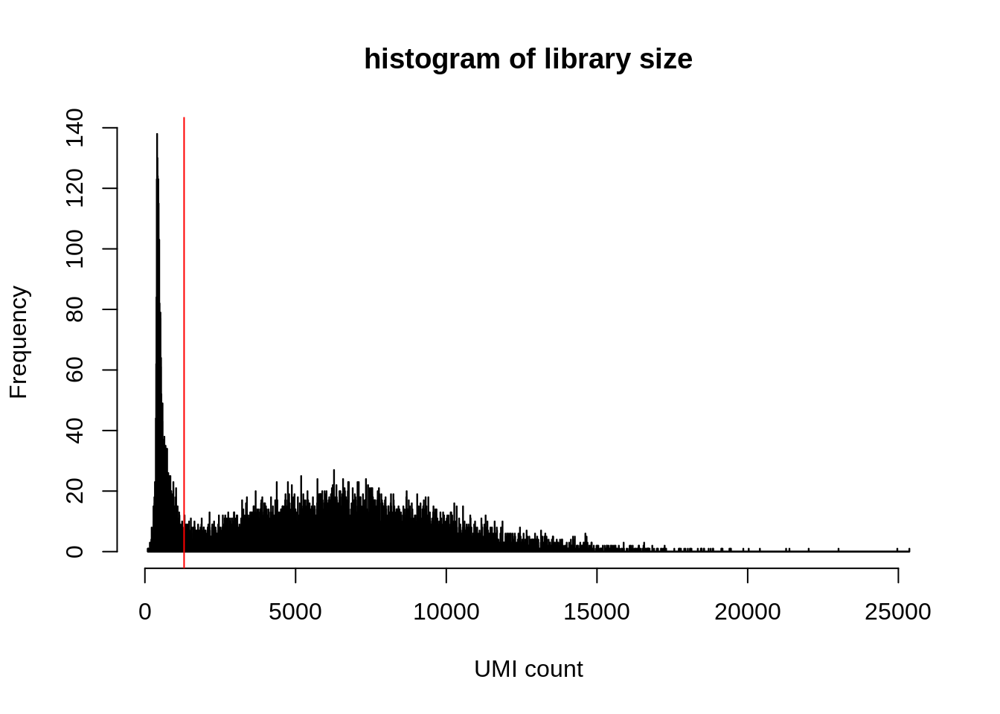
| Version | Author | Date |
|---|---|---|
| 2b3c456 | jliucx | 2024-12-26 |
cell_to_filter <- which(covariate$response_n_umis < 1300)
response_matrix_raw <- response_matrix_raw[,-cell_to_filter]
covariate <- covariate[-cell_to_filter,]
response_matrix_normalized<-t(t(response_matrix_raw)/covariate$response_n_umis)
# response_matrix_normalized <- response_matrix_raw
response_matrix <- response_matrix_normalized
rank<-T
if (rank) {
response_matrix <- t(rank_matrix(as.matrix(response_matrix))$X_ranked)
rownames(response_matrix)<- readLines("docs/row_names.txt")
}
gene_module_index_matrix <- convert_gene_list_to_matrix(response_matrix, gene_modules)1.1 Consider perturbations that affects >150 cells
library(ggplot2)
library(dplyr)
library(readr)
library(tibble)
library(tidyr)
Attaching package: 'tidyr'The following objects are masked from 'package:Matrix':
expand, pack, unpackinfect_cell_threshold <- 150
gene_modules <- readRDS("data/gene_modules_id.rds")
gene_wise_p <- read.csv("output/newest/filter_cell/gene_wise_p.csv", nrows = 207)[rowSums(get_grna_assignments(
sceptre_object = sceptre_object
)[-208,])>infect_cell_threshold,]
gene_wise_p[gene_wise_p == 0] <- 1 / 10000
gene_wise_p[gene_wise_p >= 1] <- 1- 1/10000
sceptre <- rbind(readRDS("/project/xuanyao/jiaming/Getting_started/output/both_trans_author_filtered_cell/results_run_discovery_analysis.rds")[,c(1,2,7)],
readRDS("/project/xuanyao/jiaming/Getting_started/output/both_trans_author_filtered_cell/results_run_calibration_check.rds")[,c(1,2,7)])
sceptre <- sceptre[!is.na(sceptre$p_value), ]
sceptre$p_value[sceptre$p_value == 1] <- 1 - 1e-6
sceptre_wide <- sceptre %>%
pivot_wider(names_from = response_id, values_from = p_value) %>%
as.data.frame()
# Set the row names to be the grna_id and remove the grna_id column
rownames(sceptre_wide) <- sceptre_wide$grna_id
sceptre_wide <- sceptre_wide[, -1]
sceptre_wide <- sceptre_wide[rownames(gene_wise_p)[rownames(gene_wise_p) %in% rownames(sceptre_wide)], ]
sceptre_wide <- sceptre_wide[, colnames(gene_wise_p), drop = FALSE]
library(ACAT)
module_results <- list()
# Iterate over each row of t_gene_p_no_approximation to compute ACAT p-values for each module
for (i in seq_len(nrow(gene_wise_p))) {
grna_id <- rownames(gene_wise_p)[i]
p_values_row <- gene_wise_p[i,]
# Initialize an empty list to store ACAT p-values and module names for each module
module_acat_pvals <- c()
module_names <- c()
# Iterate over each module in gene_modules to combine p-values using ACAT
for (j in seq_along(gene_modules)) {
module_name <- names(gene_modules)[j] # Get the module name
module_genes <- gene_modules[[j]][gene_modules[[j]] %in% colnames(p_values_row)]
# Only apply ACAT if there are genes to combine and they are not NA
if (length(module_genes) > 0) {
module_p_values <- as.numeric(p_values_row[module_genes])
module_p_values <- module_p_values[!is.na(module_p_values)] # Remove NAs
# Check if module_p_values still has values after removing NAs
if (length(module_p_values) > 0) {
# acat_pval <- ACAT(module_p_values)
acat_pval<-combination.test(module_p_values,weights = NA,method = "Cauchy",tail.idx = 1)
module_acat_pvals <- c(module_acat_pvals, acat_pval)
module_names <- c(module_names, module_name)
} else {
module_acat_pvals <- c(module_acat_pvals, NA)
module_names <- c(module_names, module_name)
}
} else {
module_acat_pvals <- c(module_acat_pvals, NA)
module_names <- c(module_names, module_name)
}
}
# Store results as a data frame in the list
module_results[[i]] <- data.frame(
grna_id = grna_id,
module = module_names,
acat_pval = module_acat_pvals
)
}
# Combine all results into a single data frame
module_results_t <- do.call(rbind, module_results)
module_results <- list()
# Iterate over each row of t_gene_no_approximation to compute Bonferroni p-values for each module
for (i in seq_len(nrow(gene_wise_p))) {
grna_id <- rownames(gene_wise_p)[i]
p_values_row <- gene_wise_p[i, ]
# Initialize an empty list to store Bonferroni p-values and module names for each module
module_acat_pvals <- c()
module_names <- c()
# Iterate over each module in gene_modules to combine p-values using Bonferroni
for (j in seq_along(gene_modules)) {
module_name <- names(gene_modules)[j] # Get the module name
module_genes <- gene_modules[[j]][gene_modules[[j]] %in% colnames(p_values_row)]
# Only apply Bonferroni if there are genes to combine and they are not NA
if (length(module_genes) > 0) {
module_p_values <- as.numeric(p_values_row[module_genes])
module_p_values <- module_p_values[!is.na(module_p_values)] # Remove NAs
# Check if module_p_values still has values after removing NAs
if (length(module_p_values) > 0) {
# Bonferroni adjustment: multiply smallest p-value by number of tests
bonferroni_pval <- min(module_p_values) * length(module_p_values)
bonferroni_pval <- min(bonferroni_pval, 1) # Cap p-values at 1
module_acat_pvals <- c(module_acat_pvals, bonferroni_pval)
module_names <- c(module_names, module_name)
} else {
module_acat_pvals <- c(module_acat_pvals, NA)
module_names <- c(module_names, module_name)
}
} else {
module_acat_pvals <- c(module_acat_pvals, NA)
module_names <- c(module_names, module_name)
}
}
# Store results as a data frame in the list
module_results[[i]] <- data.frame(
grna_id = grna_id,
module = module_names,
bonferroni_pval = module_acat_pvals
)
}
# Combine all results into a single data frame
module_results_t_bonforroni <- do.call(rbind, module_results)
module_results <- list()
# Iterate over each row of t_gene_no_approximation to compute Bonferroni p-values for each module
for (i in seq_len(nrow(sceptre_wide))) {
grna_id <- rownames(sceptre_wide)[i]
p_values_row <- sceptre_wide[i, ]
# Initialize an empty list to store Bonferroni p-values and module names for each module
module_acat_pvals <- c()
module_names <- c()
# Iterate over each module in gene_modules to combine p-values using Bonferroni
for (j in seq_along(gene_modules)) {
module_name <- names(gene_modules)[j] # Get the module name
module_genes <- gene_modules[[j]][gene_modules[[j]] %in% colnames(p_values_row)]
# Only apply Bonferroni if there are genes to combine and they are not NA
if (length(module_genes) > 0) {
module_p_values <- as.numeric(p_values_row[module_genes])
module_p_values <- module_p_values[!is.na(module_p_values)] # Remove NAs
# Check if module_p_values still has values after removing NAs
if (length(module_p_values) > 0) {
# Bonferroni adjustment: multiply smallest p-value by number of tests
bonferroni_pval <- min(module_p_values) * length(module_p_values)
bonferroni_pval <- min(bonferroni_pval, 1) # Cap p-values at 1
module_acat_pvals <- c(module_acat_pvals, bonferroni_pval)
module_names <- c(module_names, module_name)
} else {
module_acat_pvals <- c(module_acat_pvals, NA)
module_names <- c(module_names, module_name)
}
} else {
module_acat_pvals <- c(module_acat_pvals, NA)
module_names <- c(module_names, module_name)
}
}
# Store results as a data frame in the list
module_results[[i]] <- data.frame(
grna_id = grna_id,
module = module_names,
bonferroni_pval = module_acat_pvals
)
}
# Combine all results into a single data frame
module_results_sceptre_bonforroni <- do.call(rbind, module_results)
module_results <- list()
# Iterate over each row of t_gene_p_no_approximation to compute ACAT p-values for each module
for (i in seq_len(nrow(sceptre_wide))) {
grna_id <- rownames(sceptre_wide)[i]
p_values_row <- sceptre_wide[i,]
# Initialize an empty list to store ACAT p-values and module names for each module
module_acat_pvals <- c()
module_names <- c()
# Iterate over each module in gene_modules to combine p-values using ACAT
for (j in seq_along(gene_modules)) {
module_name <- names(gene_modules)[j] # Get the module name
module_genes <- gene_modules[[j]][gene_modules[[j]] %in% colnames(p_values_row)]
# Only apply ACAT if there are genes to combine and they are not NA
if (length(module_genes) > 0) {
module_p_values <- as.numeric(p_values_row[module_genes])
module_p_values <- module_p_values[!is.na(module_p_values)] # Remove NAs
# Check if module_p_values still has values after removing NAs
if (length(module_p_values) > 0) {
# acat_pval <- ACAT(module_p_values)
acat_pval<- combination.test(module_p_values,weights = NA,method = "Cauchy",tail.idx = 1)
module_acat_pvals <- c(module_acat_pvals, acat_pval)
module_names <- c(module_names, module_name)
} else {
module_acat_pvals <- c(module_acat_pvals, NA)
module_names <- c(module_names, module_name)
}
} else {
module_acat_pvals <- c(module_acat_pvals, NA)
module_names <- c(module_names, module_name)
}
}
# Store results as a data frame in the list
module_results[[i]] <- data.frame(
grna_id = grna_id,
module = module_names,
acat_pval = module_acat_pvals
)
}
# Combine all results into a single data frame
module_results_sceptre <- do.call(rbind, module_results)
library(tibble)
minp <- read.csv("output/newest/filter_cell/minp.csv")[rowSums(get_grna_assignments(
sceptre_object = sceptre_object
)[-208,])>infect_cell_threshold,]
minp_long <- minp%>%
rownames_to_column(var = "grna_id") %>% # Add row names as a column
pivot_longer(cols = -grna_id, names_to = "module", values_to = "p_value")
# Remove rows with NA p-values
minp_long <- minp_long %>% filter(!is.na(p_value))
our_method <- read.csv("output/newest/filter_cell/our_method.csv")[rowSums(get_grna_assignments(
sceptre_object = sceptre_object
)[-208,])>infect_cell_threshold,]
our_method_long <- our_method %>%
rownames_to_column(var = "grna_id") %>% # Add row names as a column
pivot_longer(cols = -grna_id, names_to = "module", values_to = "p_value")
# Remove rows with NA p-values (if any)
our_method_long <- our_method_long %>% filter(!is.na(p_value))
module_results_t <- module_results_t %>%
semi_join(module_results_sceptre, by = c("grna_id", "module"))
module_results_t_bonforroni <- module_results_t_bonforroni %>%
semi_join(module_results_sceptre, by = c("grna_id", "module"))
# Filter rows in minp_long
minp_long <- minp_long %>%
semi_join(module_results_sceptre, by = c("grna_id", "module"))
# Filter rows in our_method_long
our_method_long <- our_method_long %>%
semi_join(module_results_sceptre, by = c("grna_id", "module"))
module_results_t$bh_pval <- p.adjust(module_results_t$acat_pval, method = "BH")
module_results_t$identifier <- paste(module_results_t$grna_id, module_results_t$module, sep = "_")
module_results_sceptre$bh_pval <- p.adjust(module_results_sceptre$acat_pval, method = "BH")
module_results_sceptre$identifier <- paste(module_results_sceptre$grna_id, module_results_sceptre$module, sep = "_")
module_results_sceptre_bonforroni$bh_pval <- p.adjust(module_results_sceptre_bonforroni$bonferroni_pval, method = "BH")
module_results_sceptre_bonforroni$identifier <- paste(module_results_sceptre_bonforroni$grna_id, module_results_sceptre_bonforroni$module, sep = "_")
module_results_t_bonforroni$bh_pval <- p.adjust(module_results_t_bonforroni$bonferroni_pval, method = "BH")
module_results_t_bonforroni$identifier <- paste(module_results_t_bonforroni$grna_id, module_results_t_bonforroni$module, sep = "_")
minp_long$bh_pval <- p.adjust(minp_long$p_value, method = "BH")
minp_long$identifier <- paste(minp_long$grna_id, minp_long$module, sep = "_")
our_method_long$bh_pval <- p.adjust(our_method_long$p_value, method = "BH")
our_method_long$identifier <- paste(our_method_long$grna_id, our_method_long$module, sep = "_")significant_levels <- c(0.01, 0.05, 0.1, 0.25)
# significant_levels <- 0.01
plot_list <- list()
# Loop through significant levels and display plots
for (significant_level in significant_levels) {
# Filter significant IDs for each method
significant_ids_gene_wise_p <- module_results_sceptre$identifier[
module_results_sceptre$bh_pval < significant_level]
significant_ids_gene_wise_p_bonfer <- module_results_sceptre_bonforroni$identifier[
module_results_sceptre_bonforroni$bh_pval < significant_level]
significant_ids_gene_wise_p_t <- module_results_t$identifier[
module_results_t$bh_pval < significant_level]
significant_ids_gene_wise_p_t_bonfer <- module_results_t_bonforroni$identifier[
module_results_t_bonforroni$bh_pval < significant_level]
significant_ids_minp <- minp_long$identifier[
minp_long$bh_pval < significant_level]
significant_ids_ours <- our_method_long$identifier[
our_method_long$bh_pval < significant_level]
# Prepare the sets
venn_data <- list(
`Sceptre+Cauchy` = significant_ids_gene_wise_p,
`t+Cauchy` = significant_ids_gene_wise_p_t,
`minp` = significant_ids_minp,
`Our method` = significant_ids_ours
# `Sceptre+Bonfer` = significant_ids_gene_wise_p_bonfer,
# `t+Bonfer`=significant_ids_gene_wise_p_t_bonfer
)
# Generate the Euler diagram and display it
euler_plot <- plot(euler(venn_data),
fills = list(fill = c("red", "purple", "green", "yellow","purple"), alpha = 0.5),
edges = TRUE, quantities = TRUE,
main = paste("Significant level", significant_level)
)
plot_list[[length(plot_list) + 1]] <- euler_plot
}
grid.arrange(grobs = plot_list, ncol = 2)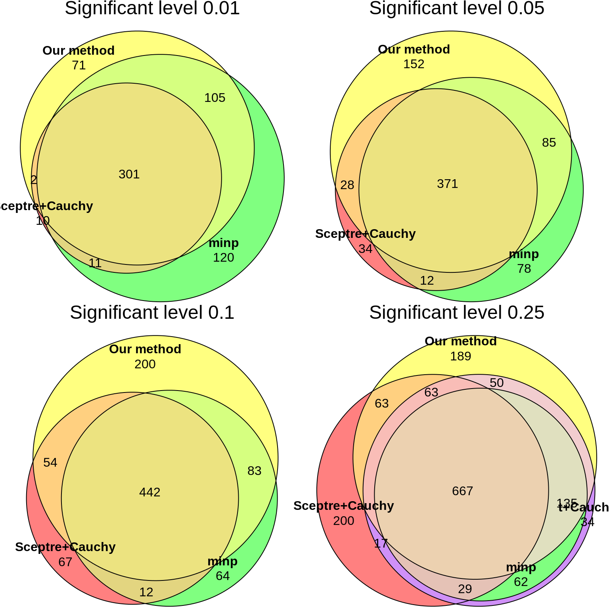
par(mfrow = c(1, 1))Test on non-targeting gRNAs
ntc_our <- our_method_long %>%
filter(startsWith(grna_id, "NTC")) %>%
select(grna_id, p_value)
ntc_minp <- minp_long %>%
filter(startsWith(grna_id, "NTC")) %>%
select(grna_id, p_value)
ntc_t <- module_results_t %>%
filter(startsWith(grna_id, "NTC")) %>%
select(grna_id, acat_pval)
ntc_sceptre <- module_results_sceptre %>%
filter(startsWith(grna_id, "NTC")) %>%
select(grna_id, acat_pval)
plot_list <- list()
plot_list[[1]] <- gg_qqplot(as.vector(ntc_our$p_value), title="Negative control our method")
plot_list[[2]] <- gg_qqplot(as.vector(ntc_minp$p_value), title="Negative control minp")
plot_list[[3]] <- gg_qqplot(as.vector(ntc_t$acat_pval), title="Negative control t-Cauchy")
plot_list[[4]] <- gg_qqplot(as.vector(ntc_sceptre$acat_pval), title="Negative control sceptre-Cauchy")
grid.arrange(grobs = plot_list, ncol = 2)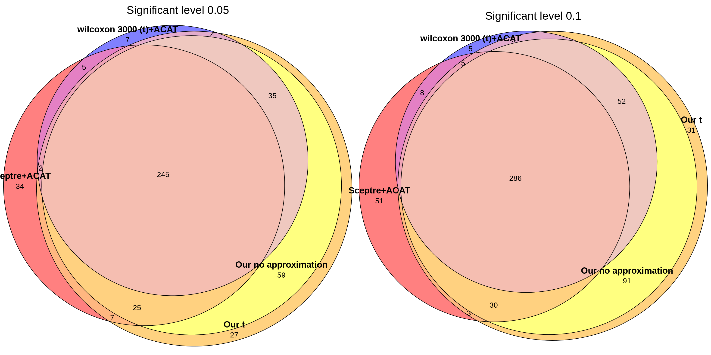
| Version | Author | Date |
|---|---|---|
| 2b3c456 | jliucx | 2024-12-26 |
1.2 Consider all perturbation-module pairs
significant_levels <- c(0.01, 0.05, 0.1, 0.25)
# significant_levels <- 0.01
plot_list <- list()
# Loop through significant levels and display plots
for (significant_level in significant_levels) {
# Filter significant IDs for each method
significant_ids_gene_wise_p <- module_results_sceptre$identifier[
module_results_sceptre$bh_pval < significant_level]
significant_ids_gene_wise_p_bonfer <- module_results_sceptre_bonforroni$identifier[
module_results_sceptre_bonforroni$bh_pval < significant_level]
significant_ids_gene_wise_p_t <- module_results_t$identifier[
module_results_t$bh_pval < significant_level]
significant_ids_gene_wise_p_t_bonfer <- module_results_t_bonforroni$identifier[
module_results_t_bonforroni$bh_pval < significant_level]
significant_ids_minp <- minp_long$identifier[
minp_long$bh_pval < significant_level]
significant_ids_ours <- our_method_long$identifier[
our_method_long$bh_pval < significant_level]
# Prepare the sets
venn_data <- list(
`Sceptre+Cauchy` = significant_ids_gene_wise_p,
`t+Cauchy` = significant_ids_gene_wise_p_t,
`minp` = significant_ids_minp,
`Our method` = significant_ids_ours
# `Sceptre+Bonfer` = significant_ids_gene_wise_p_bonfer,
# `t+Bonfer`=significant_ids_gene_wise_p_t_bonfer
)
# Generate the Euler diagram and display it
euler_plot <- plot(euler(venn_data),
fills = list(fill = c("red", "purple", "green", "yellow","purple"), alpha = 0.5),
edges = TRUE, quantities = TRUE,
main = paste("Significant level", significant_level)
)
plot_list[[length(plot_list) + 1]] <- euler_plot
}
grid.arrange(grobs = plot_list, ncol = 2)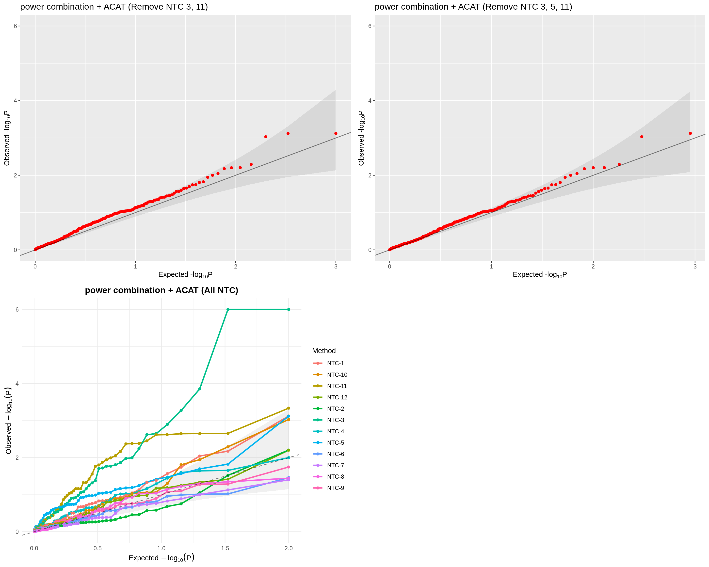
| Version | Author | Date |
|---|---|---|
| 2b3c456 | jliucx | 2024-12-26 |
par(mfrow = c(1, 1))1.3 Bonferonni vs Cauchy combination
significant_levels <- c(0.01, 0.05, 0.1, 0.35)
# significant_levels <- 0.01
plot_list <- list()
# Loop through significant levels and display plots
for (significant_level in significant_levels) {
# Filter significant IDs for each method
significant_ids_gene_wise_p <- module_results_sceptre$identifier[
module_results_sceptre$bh_pval < significant_level]
significant_ids_gene_wise_p_bonfer <- module_results_sceptre_bonforroni$identifier[
module_results_sceptre_bonforroni$bh_pval < significant_level]
significant_ids_gene_wise_p_t <- module_results_t$identifier[
module_results_t$bh_pval < significant_level]
significant_ids_gene_wise_p_t_bonfer <- module_results_t_bonforroni$identifier[
module_results_t_bonforroni$bh_pval < significant_level]
significant_ids_minp <- minp_long$identifier[
minp_long$bh_pval < significant_level]
significant_ids_ours <- our_method_long$identifier[
our_method_long$bh_pval < significant_level]
# Prepare the sets
venn_data <- list(
`Sceptre+Cauchy` = significant_ids_gene_wise_p,
# `minp` = significant_ids_minp,
# `Our method` = significant_ids_ours,
`Sceptre+Bonfer` = significant_ids_gene_wise_p_bonfer,
`t+Cauchy` = significant_ids_gene_wise_p_t,
`t+Bonfer`=significant_ids_gene_wise_p_t_bonfer
)
# Generate the Euler diagram and display it
euler_plot <- plot(euler(venn_data),
fills = list(fill = c("green", "yellow", "red", "purple"), alpha = 0.5),
edges = TRUE, quantities = TRUE,
main = paste("Significant level", significant_level)
)
plot_list[[length(plot_list) + 1]] <- euler_plot
}
grid.arrange(grobs = plot_list, ncol = 2)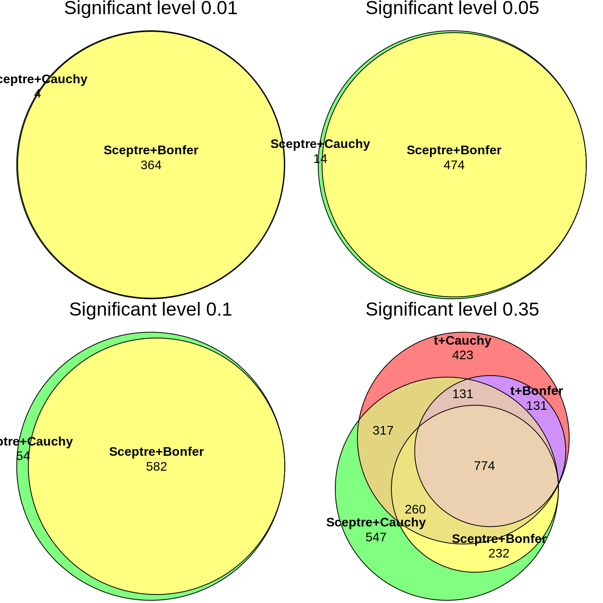
par(mfrow = c(1, 1))Test on non-targeting gRNAs
ntc_our <- our_method_long %>%
filter(startsWith(grna_id, "NTC")) %>%
select(grna_id, p_value)
ntc_minp <- minp_long %>%
filter(startsWith(grna_id, "NTC")) %>%
select(grna_id, p_value)
ntc_t <- module_results_t %>%
filter(startsWith(grna_id, "NTC")) %>%
select(grna_id, acat_pval)
ntc_sceptre <- module_results_sceptre %>%
filter(startsWith(grna_id, "NTC")) %>%
select(grna_id, acat_pval)
plot_list <- list()
plot_list[[1]] <- gg_qqplot(as.vector(ntc_our$p_value), title="Negative control our method")
plot_list[[2]] <- gg_qqplot(as.vector(ntc_minp$p_value), title="Negative control minp")
plot_list[[3]] <- gg_qqplot(as.vector(ntc_t$acat_pval), title="Negative control t-Cauchy")
plot_list[[4]] <- gg_qqplot(as.vector(ntc_sceptre$acat_pval), title="Negative control sceptre-Cauchy")
grid.arrange(grobs = plot_list, ncol = 2)
pvals_1<-c(0.0001,0.1,0.2,0.5,0.7)
pvals_2<-c(0.1,0.2,0.5,0.7,0.9)
pvals_3<-c(0.0001,0.1,0.2,0.3,0.999999)
combined_p<- data.frame("pval1"=c(ACAT(pvals_1),combination.test(pvals_1,weights = NA,method = "Cauchy",tail.idx = 1)),"pval2"=c(ACAT(pvals_2),combination.test(pvals_2,weights = NA,method = "Cauchy",tail.idx = 1)),"pval3"=c(ACAT(pvals_3),combination.test(pvals_3,weights = NA,method = "Cauchy",tail.idx = 1)))
rownames(combined_p) <-c("ACAT","Lin Gui's")
combined_p pval1 pval2 pval3
ACAT 0.0004994148 0.4588605 0.9999949494
Lin Gui's 0.0004993300 0.3506147 0.00049960112 Test on genewise p value
2.1 Number of gene-wise rejections
gene_wise_p_subset <- gene_wise_p[rownames(gene_wise_p) %in% rownames(sceptre_wide), ]
# Flatten sceptre_wide and gene_wise_p_subset into vectors
sceptre_pvals <- as.numeric(as.matrix(sceptre_wide))
gene_wise_pvals <- as.numeric(as.matrix(gene_wise_p_subset))
# Remove pairs with NAs in either dataset
valid_indices <- !is.na(sceptre_pvals) & !is.na(gene_wise_pvals)
sceptre_pvals <- sceptre_pvals[valid_indices]
gene_wise_pvals <- gene_wise_pvals[valid_indices]
# Apply BH correction
sceptre_bh <- p.adjust(sceptre_pvals, method = "BH")
gene_wise_bh <- p.adjust(gene_wise_pvals, method = "BH")
alpha_values <- c(0.05, 0.1, 0.15, 0.2)
# Initialize a matrix to store counts for each alpha
combined_counts <- matrix(0, nrow = 3, ncol = length(alpha_values))
# Loop through each alpha
for (i in seq_along(alpha_values)) {
alpha <- alpha_values[i]
# Calculate rejections for the current alpha
sceptre_rejections <- which(sceptre_bh < alpha)
gene_wise_rejections <- which(gene_wise_bh < alpha)
# Find common and unique rejections
common_rejections <- intersect(sceptre_rejections, gene_wise_rejections)
sceptre_unique <- setdiff(sceptre_rejections, common_rejections)
gene_wise_unique <- setdiff(gene_wise_rejections, common_rejections)
# Store counts for the current alpha
combined_counts[, i] <- c(length(common_rejections),
length(sceptre_unique),
length(gene_wise_unique))
}
# Create bar plot
barplot(combined_counts,
beside = FALSE, # Stacked bars
col = c(rgb(0.5, 0.5, 0.5, 0.5), # Grey with 50% transparency
rgb(1, 0, 0, 0.5), # Red with 50% transparency
rgb(1, 1, 0, 0.5)), # Grey = Common, Red = Sceptre unique, Yellow = Gene-wise unique
names.arg = paste("Alpha =", alpha_values),
main = "Genewise Rejections Comparison For All Perturbations",
xlab = NULL,
ylab = "Count",
legend.text = c("Common", "Sceptre Unique", "Gene-wise Unique"),
args.legend = list(x = "topleft"))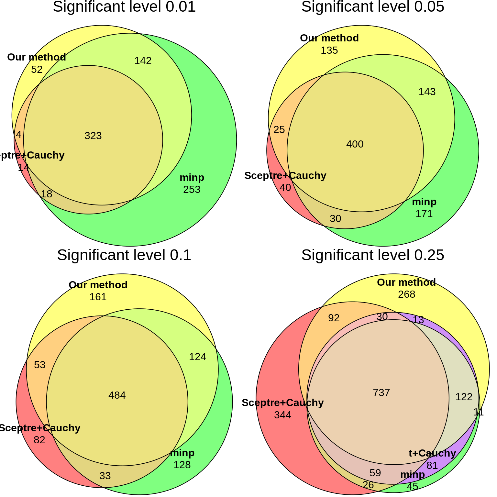
| Version | Author | Date |
|---|---|---|
| 2412094 | jliucx | 2024-12-28 |
snp_labels <- c("rs524137", "rs73660574", "rs79755767", "rs35979828",
"rs6592965", "rs12784232", "rs2834670", "rs2526377",
"rs1109024", "rs35531439")
# Filter rows in the data corresponding to these SNPs
trans_positive_control_rows <- which(grna_target_data_frame_omit$grna_target %in% snp_labels, )gene_wise_p_subset <- gene_wise_p[rownames(gene_wise_p) %in% rownames(sceptre_wide), ]
t_trans_positive<- gene_wise_p_subset[trans_positive_control_rows,]
sceptre_trans_positive <- sceptre_wide[trans_positive_control_rows,]
# Flatten sceptre_wide and gene_wise_p_subset into vectors
sceptre_pvals <- as.numeric(as.matrix(sceptre_trans_positive))
gene_wise_pvals <- as.numeric(as.matrix(t_trans_positive))
# Remove pairs with NAs in either dataset
valid_indices <- !is.na(sceptre_pvals) & !is.na(gene_wise_pvals)
sceptre_pvals <- sceptre_pvals[valid_indices]
gene_wise_pvals <- gene_wise_pvals[valid_indices]
# Apply BH correction
sceptre_bh <- p.adjust(sceptre_pvals, method = "BH")
gene_wise_bh <- p.adjust(gene_wise_pvals, method = "BH")
alpha_values <- c(0.05, 0.1, 0.15, 0.2)
# Initialize a matrix to store counts for each alpha
combined_counts <- matrix(0, nrow = 3, ncol = length(alpha_values))
# Loop through each alpha
for (i in seq_along(alpha_values)) {
alpha <- alpha_values[i]
# Calculate rejections for the current alpha
sceptre_rejections <- which(sceptre_bh < alpha)
gene_wise_rejections <- which(gene_wise_bh < alpha)
# Find common and unique rejections
common_rejections <- intersect(sceptre_rejections, gene_wise_rejections)
sceptre_unique <- setdiff(sceptre_rejections, common_rejections)
gene_wise_unique <- setdiff(gene_wise_rejections, common_rejections)
# Store counts for the current alpha
combined_counts[, i] <- c(length(common_rejections),
length(sceptre_unique),
length(gene_wise_unique))
}
# Create bar plot
barplot(combined_counts,
beside = FALSE, # Stacked bars
col = c(rgb(0.5, 0.5, 0.5, 0.5), # Grey with 50% transparency
rgb(1, 0, 0, 0.5), # Red with 50% transparency
rgb(1, 1, 0, 0.5)), # Grey = Common, Red = Sceptre unique, Yellow = Gene-wise unique
names.arg = paste("Alpha =", alpha_values),
main = "Genewise Rejections Comparison For Trans-positive SNPs",
xlab = NULL,
ylab = "Count",
legend.text = c("Common", "Sceptre Unique", "T test Unique"),
args.legend = list(x = "topleft"))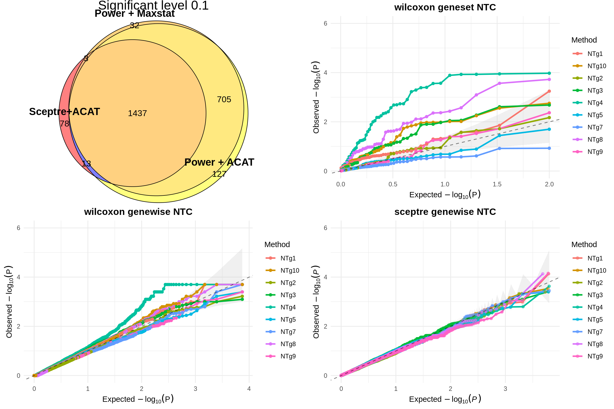
| Version | Author | Date |
|---|---|---|
| b29945c | jliucx | 2024-12-28 |
sceptre_pvals <- sceptre_cis_positive
gene_wise_pvals <- t_cis_positive
# Remove pairs with NAs in either dataset
valid_indices <- !is.na(sceptre_pvals) & !is.na(gene_wise_pvals)
sceptre_pvals <- sceptre_pvals[valid_indices]
gene_wise_pvals <- gene_wise_pvals[valid_indices]
# Apply BH correction
sceptre_bh <- p.adjust(sceptre_pvals, method = "BH")
gene_wise_bh <- p.adjust(gene_wise_pvals, method = "BH")
alpha_values <- c(0.05, 0.1, 0.2,0.5)
# Initialize a matrix to store counts for each alpha
combined_counts <- matrix(0, nrow = 3, ncol = length(alpha_values))
# Loop through each alpha
for (i in seq_along(alpha_values)) {
alpha <- alpha_values[i]
# Calculate rejections for the current alpha
sceptre_rejections <- which(sceptre_bh < alpha)
gene_wise_rejections <- which(gene_wise_bh < alpha)
# Find common and unique rejections
common_rejections <- intersect(sceptre_rejections, gene_wise_rejections)
sceptre_unique <- setdiff(sceptre_rejections, common_rejections)
gene_wise_unique <- setdiff(gene_wise_rejections, common_rejections)
# Store counts for the current alpha
combined_counts[, i] <- c(length(common_rejections),
length(sceptre_unique),
length(gene_wise_unique))
}
# Create bar plot
barplot(combined_counts,
beside = FALSE, # Stacked bars
col = c(rgb(0.5, 0.5, 0.5, 0.5), # Grey with 50% transparency
rgb(1, 0, 0, 0.5), # Red with 50% transparency
rgb(1, 1, 0, 0.5)), # Grey = Common, Red = Sceptre unique, Yellow = Gene-wise unique
names.arg = paste("Alpha =", alpha_values),
main = "Genewise Rejections Comparison For Cis-positive SNPs",
xlab = NULL,
ylab = "Count",
legend.text = c("Common", "Sceptre Unique", "T test Unique"),
args.legend = list(x = "topleft"))
2.2 Scatter plots to compare gene wise P values of sceptre glm and our t test
# Define indices
set.seed(0)
indices <- sample(1:nrow(sceptre_wide),4,replace=F)
par(mfrow = c(2, 2),pty = "s")
# Loop through indices for scatter and QQ plots
for (index in indices) {
# Extract vectors for the current index
vector1 <- as.vector(as.matrix(gene_wise_p[index, ]))
vector2 <- as.vector(as.matrix(sceptre_wide[index, ]))
# Filter out NA values
valid_indices <- !is.na(vector1) & !is.na(vector2)
filtered_vector1 <- vector1[valid_indices]
filtered_vector2 <- vector2[valid_indices]
# Scatter Plot
plot(
filtered_vector1, filtered_vector2,
xlab = "Gene Wise P Values from t test",
ylab = "Sceptre Wide P Values",
main = paste0("Scatter plot for ",index, " th perturbation"),
pch = 16,
asp = 1,
xlim=c(0,1),
ylim=c(0,1),
col = "blue",
cex = 0.7
)
}
# Example loop for scatter plots
for (index in indices) { # Randomly pick 6 indices
plot(
sort(filtered_vector1), sort(filtered_vector2),
xlab = "Gene Wise P Values from t test",
ylab = "Sceptre Wide P Values",
main = paste("QQ plot for ",index, "th perturbation"),
asp = 1, # Ensure aspect ratio is 1:1
xlim = c(0, 1),
ylim = c(0, 1),
pch = 16,
col = "blue",
cex = 0.7
)
}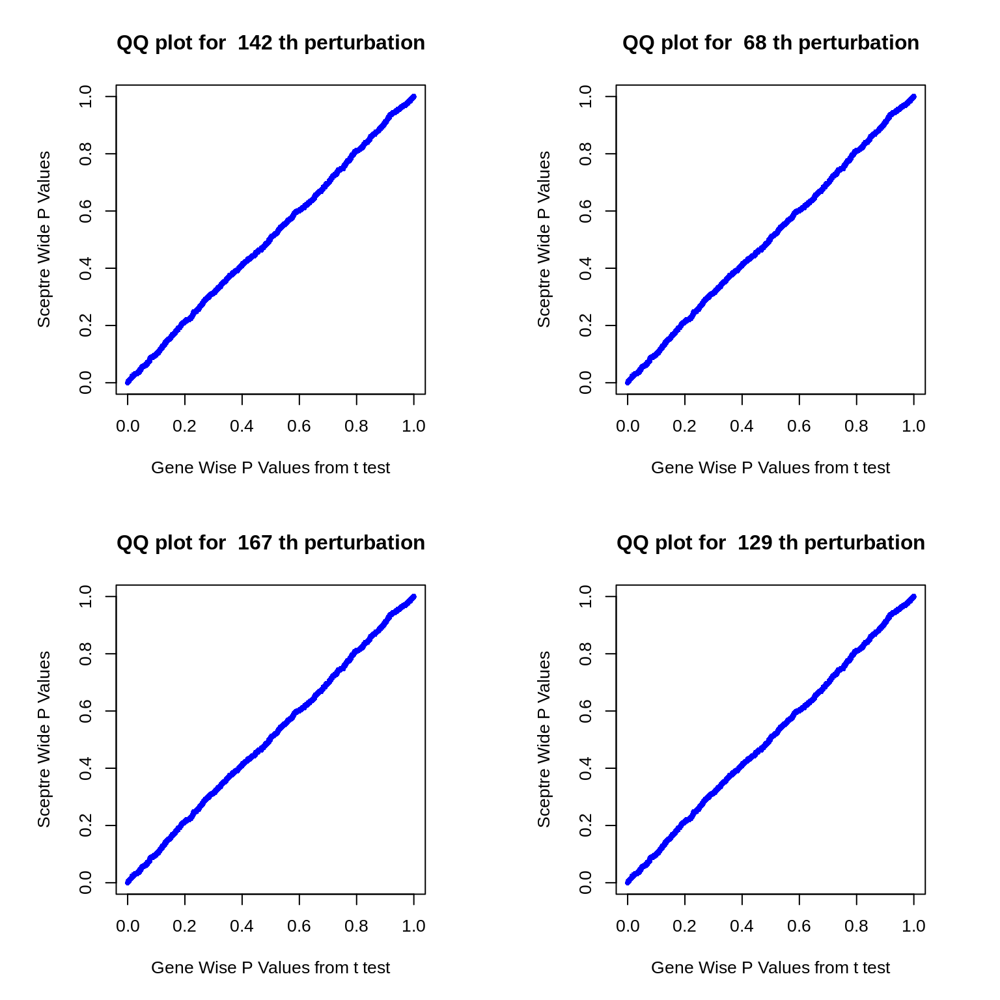
| Version | Author | Date |
|---|---|---|
| b29945c | jliucx | 2024-12-28 |
# Reset layout to single plot
par(mfrow = c(1, 1))Notes:
1. In the above plot, the perturbations are randomly chosen 2. We calculate the p values for two-sided t-test by
\(min(2 \times\frac{min(\#left,\#right)}{\#permutation},1)\)
\(\#left\) means how many null test statistics are smaller than observed test statistics.
2.3 Biased histogram of test statistics
Select Non-targeting gRNA:
2.3.1 Check the null distribution of the test statistics for each gene and see if the
test statistics are always non-centered.
par(mfrow = c(3, 2))
set.seed(0)
gene_idx <- sample(1:dim(gene_wise_test_tensor)[2],6)
for (i in gene_idx){
value <- gene_wise_test_tensor[1, i, 1]
# Plot the histogram
hist(gene_wise_test_tensor[, i,1], main = paste0("Test statistics of " ,dimnames(gene_wise_test_tensor)[[3]][1], "-", dimnames(gene_wise_test_tensor)[[2]][i]), xlab="null test statistics", breaks=1000)
# Add a vertical line to indicate the value
abline(v = value, col = "red", lwd = 2)
# Optionally, add a label for the value
text(value, par("usr")[4] * 0.9, paste("Observed:", round(value, 2)), col = "red", pos = 4)
}
par(mfrow = c(1, 1))The genes are randomly chosen
2.3.2 Compute the glm test statistics using the glm function in R
ranked_response<-round(response_matrix[gene_idx,])
par(mfrow = c(3, 2))
grna_indices <- seq(1, by = nrow(grna_assignment_matrix), length.out = (n_permute+1))
subset_grna_assignment_matrix <- grna_assignment_matrix_combined[grna_indices, ]
for (k in 1:nrow(ranked_response)){
z_values <- vector("list", 800)
# Loop through the permutations
for (i in 1:800) {
# Fit the GLM model
model <- glm(
ranked_response[k,] ~ subset_grna_assignment_matrix[i, ] + log(covariate$response_n_umis),
family = "poisson"
)
coef <- coef(summary(model)) # Summary of the model
# Calculate the z-value for the predictor variable
z_values[i] <- coef[2, "Estimate"] / coef[2, "Std. Error"]
}
hist(
as.numeric(z_values),
main = paste0("Test statistics of ", rownames(grna_assignment_matrix)[grna_indices[1]],"-", rownames(ranked_response)[k]), xlab="null test statistics", breaks=800
)
abline(v = z_values[[1]], col = "red", lwd = 2)
# Optionally, add a label for the value
text(z_values[[1]], par("usr")[4] * 0.9, "Observed", col = "red", pos = 4)
}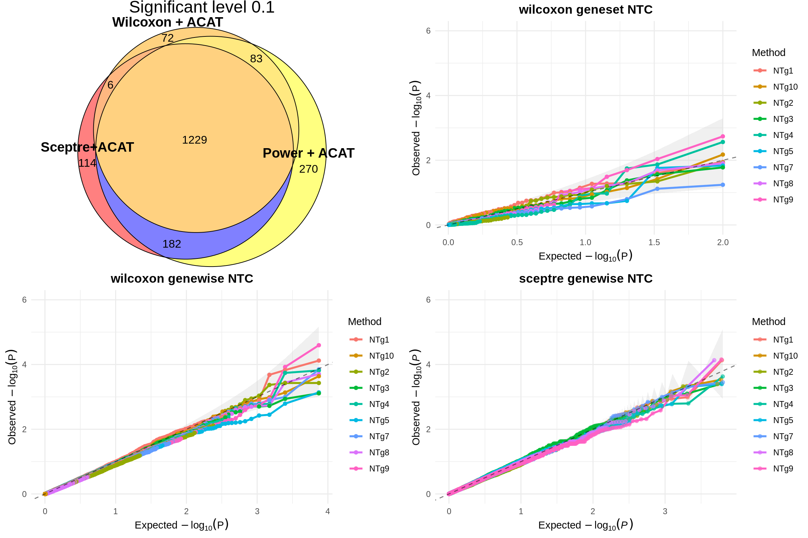
2.4 Weird spikes found in histograms of some purturbation-gene test statistics
suspicious_gene_id <-c(560,1417,1455,1562,1910,2010)
par(mfrow=c(3,2))
for (i in suspicious_gene_id){
hist(gene_wise_test_tensor[, i, 5], breaks = 3000, main=paste0("Null t test statistics: ",rownames(grna_assignment_matrix)[5],"-",rownames(response_matrix)[i]),
xlab = "Values", col = "lightblue")
abline(v = gene_wise_test_tensor[1, i, 5], col = "red", lwd = 1)
text(gene_wise_test_tensor[1, i, 5], par("usr")[4] * 0.9, "Observed", col = "red", pos = 4)
}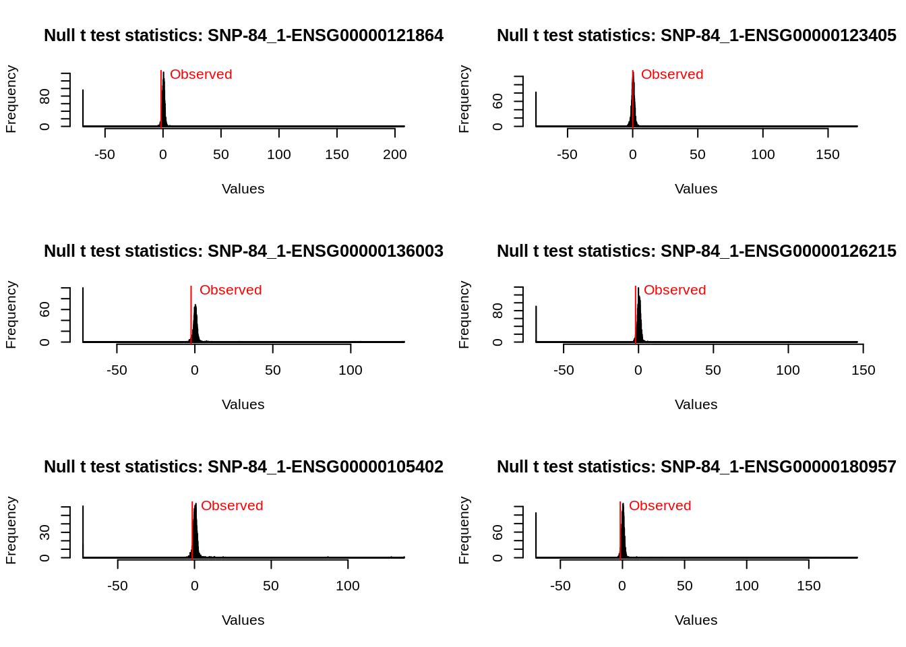
par(mfrow=c(3,2))
for (i in suspicious_gene_id){
hist(gene_wise_test_tensor[, i, 4], breaks = 3000, main=paste0("Null t test statistics: ",rownames(grna_assignment_matrix)[4],"-",rownames(response_matrix)[i]),
xlab = "Values", col = "lightblue", xlim = c(min(gene_wise_test_tensor[, i, 4]), max(gene_wise_test_tensor[, i, 4])))
abline(v = gene_wise_test_tensor[1, i, 4], col = "red", lwd = 0.5)
text(gene_wise_test_tensor[1, i, 4], par("usr")[4] * 0.9, "Observed", col = "red", pos = 4)
}
highlighted_values <- gene_wise_test_tensor[, 560, 4][gene_wise_test_tensor[, 560, 4] < -50]
hist(highlighted_values,
breaks = 15,
main = "Histogram of Problematic Region (Values < -50)",
xlab = "Values",
border = "black")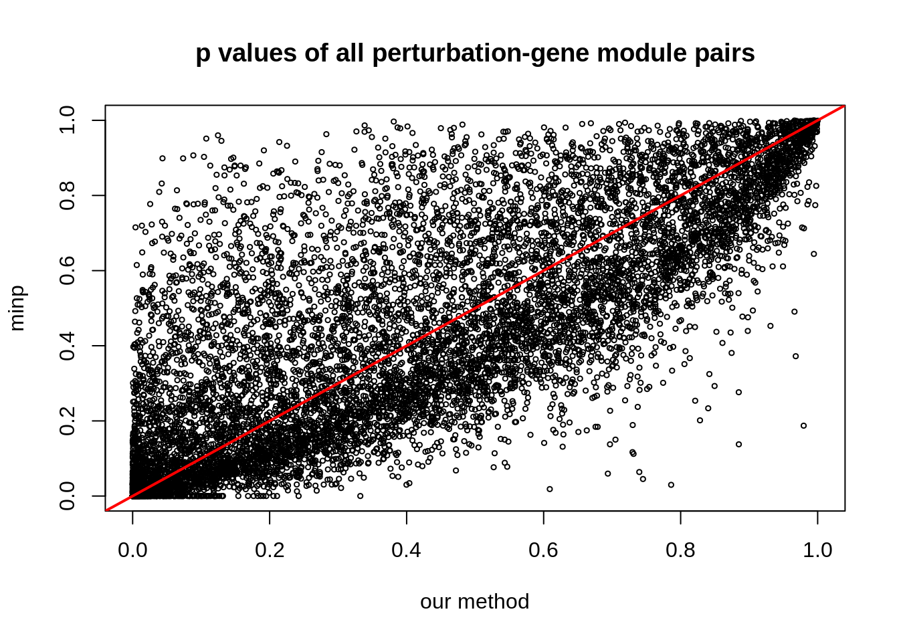
Those spikes indicate an unstable resampled null test statistics, revealing problems in resampling. We want to check whether it is a lack of cells infected by gRNA that leads to a bad logistic regression, and therefore an unstable resample
n_permute <-3000
n_rows <-nrow(get_grna_assignments(
sceptre_object = sceptre_object
)[-208,-cell_to_filter])
chunk_size <- 15
chunks <- split(1:n_rows, rep(1:ceiling(n_rows / chunk_size), each = chunk_size, length.out = n_rows))
combined_num_spike <- NULL
combined_cell_infected <- NULL
combined_proportion <- NULL
for (rows in chunks){
grna_assignment_matrix <-get_grna_assignments(
sceptre_object = sceptre_object
)[rows,-cell_to_filter]
source("code/functions.R")
set.seed(0)
grna_assignment_matrix_combined <- permutation_or_resampling(grna_assignment_matrix, n_permute, use_resample)
test_result <- t_test(response_matrix, grna_assignment_matrix_combined)
gene_wise_test_tensor <- convert_matrix_to_tensor(test_result, n_permute, grna_assignment_matrix)
num_spike <- numeric(length(rows))
proportion<- numeric(length(rows))
for (i in 1:length(rows)) {
num_spike[i] <- sum(abs(gene_wise_test_tensor[,,i]) > 30, na.rm = TRUE)
proportion[i] <- sum(apply(abs(gene_wise_test_tensor[,,i]), 2, function(col) any(col > 30, na.rm = TRUE)))
}
cell_infected <- rowSums(grna_assignment_matrix)
combined_num_spike <- c(combined_num_spike, num_spike)
combined_cell_infected <- c(combined_cell_infected, cell_infected)
combined_proportion <- c(combined_proportion,proportion)
}df <- data.frame(
combined_cell_infected = combined_cell_infected,
combined_num_spike = combined_num_spike,
combined_proportion=combined_proportion
)
df <- df %>% arrange(combined_cell_infected)
barplot(
height = df$combined_proportion,
names.arg = df$combined_cell_infected,
xlab = "Num Cell Infected",
ylab = "Num werid spikes",
main = "Number of genes that have weird histogram",
col = "skyblue",
border = "black",
las = 2 # Rotate x-axis labels for readability
)
barplot(
height = df$combined_num_spike,
names.arg = df$combined_cell_infected,
xlab = "Num Cell Infected",
ylab = "Num werid spikes",
main = "Sum of weird spikes in histograms among all genes",
col = "skyblue",
border = "black",
las = 2 # Rotate x-axis labels for readability
)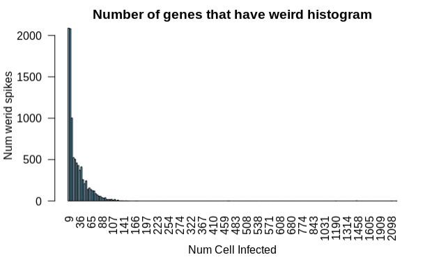
| Version | Author | Date |
|---|---|---|
| 9fff849 | jliucx | 2024-12-26 |
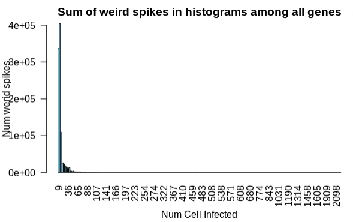
| Version | Author | Date |
|---|---|---|
| 9fff849 | jliucx | 2024-12-26 |
Explanation: 1. The first plot shows the number of genes that have the weird histogram, for each perturbations.
The second plot measures the weirdness of the histogram by the number of null test statistics that >30 or <-30. And the value shown on the graph is summed over all histograms (i.e. sum over all genes)
3 Compare gene module discoveries
3.1 Comparison of Module p values (t-Cauchy vs Sceptre-Cauchy)
set.seed(0)
indices <- sample(1:nrow(gene_wise_p),3)
par(mfrow = c(3, 2))
# Loop through indices
for (k in indices) {
# Scatter Plot
plot(
module_results_t$acat_pval[(50 * (k-1) + 1):(50 * k)],
module_results_sceptre$acat_pval[(50 * (k-1) + 1):(50 * k)],
xlab = "T-ACAT P-Value",
ylab = "Sceptre ACAT P-Value",
main = paste0("Scatter Plot for Module P-Values of ", k, "th perturbation"),
pch = 16, # Point style
col = "blue", # Point color
cex = 0.7, # Point size
)
# Pause to allow the user to view the scatter plot
# readline(prompt = "Press [Enter] to view the QQ plot...")
# QQ Plot
qqplot(
module_results_t$acat_pval[(50 * (k-1) + 1):(50 * k )],
module_results_sceptre$acat_pval[(50 * (k-1) + 1):(50 * k)],
xlab = "T-ACAT P-Value",
ylab = "Sceptre ACAT P-Value",
main = paste0("QQ Plot for Module P-Values of ", k, "th perturbation"),
pch = 16,
col = "blue",
cex = 0.7
)
abline(0, 1, col = "red", lwd = 2) # Add reference line
# Pause before moving to the next index
# readline(prompt = "Press [Enter] to move to the next index...")
}
par(mfrow = c(1, 1))plot(module_results_t$acat_pval,module_results_sceptre$acat_pval,xlab="t+Cauchy",ylab="sceptre+Cauchy",main="p values of all perturbation-gene module pairs",cex=0.5)
abline(0, 1, col = "red", lwd = 2) # Add reference line
plot(-log10(module_results_t$acat_pval),-log10(module_results_sceptre$acat_pval),xlab="t+Cauchy",ylab="sceptre+Cauchy",main="p values of all perturbation-gene module pairs (-log10)",cex=0.5)
abline(0, 1, col = "red", lwd = 2) # Add reference line
The ACAT of gene-wise p values from Sceptre glm and t test differ a lot. The pattern is different for different perturbation. This can be explained by the disparity of gene-wise p value in the previous session
3.2 Comparison of Module p values (minp vs our method)
Minp: This gene-module p value is obtained by : 1. Obtain gene-wise test statistics and their corresponding p value 2. Take minimum p value within a gene module, as the test statistics 3. Use null distribution to find final p value
We want to investigate in which case minp has a significance difference from us
# Loop through indices
par(mfrow = c(3, 2))
for (k in indices) {
# Scatter Plot
plot(
our_method_long$p_value[(50 * (k-1) + 1):(50 * k)],
minp_long$p_value[(50 * (k-1) + 1):(50 * k)],
xlab = "Our P-Value",
ylab = "Minp P-Value",
main = paste0("Scatter Plot for Module P-Values of ", k, "th perturbation"),
pch = 16, # Point style
col = "blue", # Point color
cex = 0.7, # Point size
)
# Pause to allow the user to view the scatter plot
# readline(prompt = "Press [Enter] to view the QQ plot...")
# QQ Plot
qqplot(
our_method_long$p_value[(50 * (k-1) + 1):(50 * k)],
minp_long$p_value[(50 * (k-1) + 1):(50 * k)],
xlab = "Our P-Value",
ylab = "Minp P-Value",
main = paste0("QQ Plot for Module P-Values of ", k, "th perturbation"),
pch = 16,
col = "blue",
cex = 0.7
)
abline(0, 1, col = "red", lwd = 2) # Add reference line
# Pause before moving to the next index
# readline(prompt = "Press [Enter] to move to the next index...")
}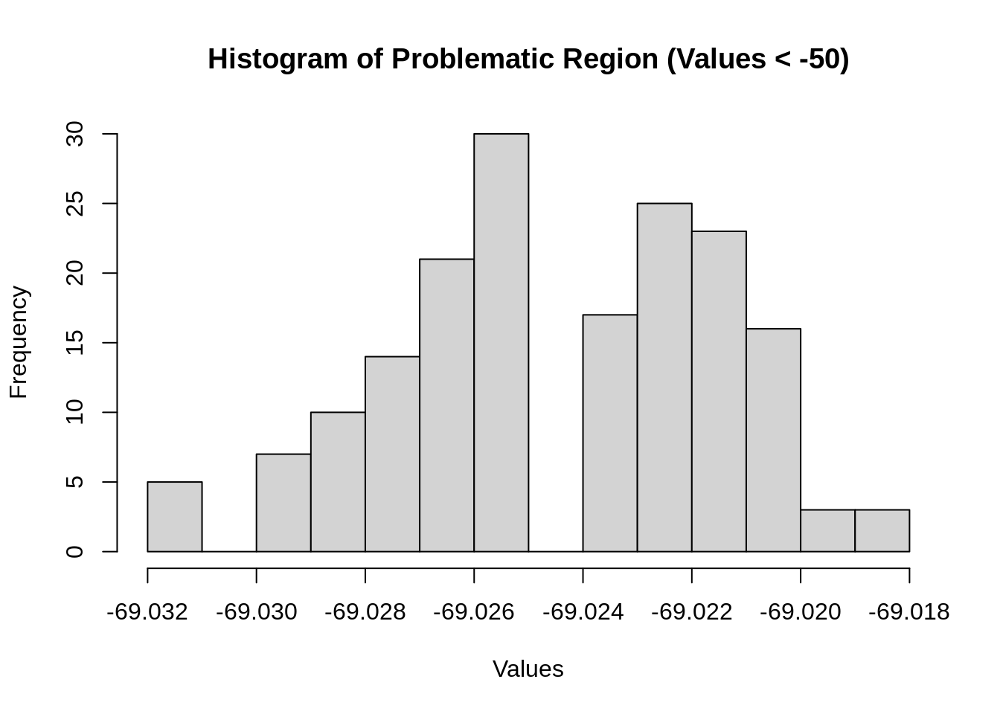
| Version | Author | Date |
|---|---|---|
| b29945c | jliucx | 2024-12-28 |
plot(our_method_long$p_value,minp_long$p_value, main="p values of all perturbation-gene module pairs",xlab="our method",ylab="minp",cex=0.5)
abline(0, 1, col = "red", lwd = 2,cex=0.5) # Add reference line
plot(-log10(our_method_long$p_value),-log10(minp_long$p_value),main="p values of all perturbation-gene module pairs (-log transformed)",xlab="our method",ylab="minp",cex=0.5)
abline(0, 1, col = "red", lwd = 2) # Add reference line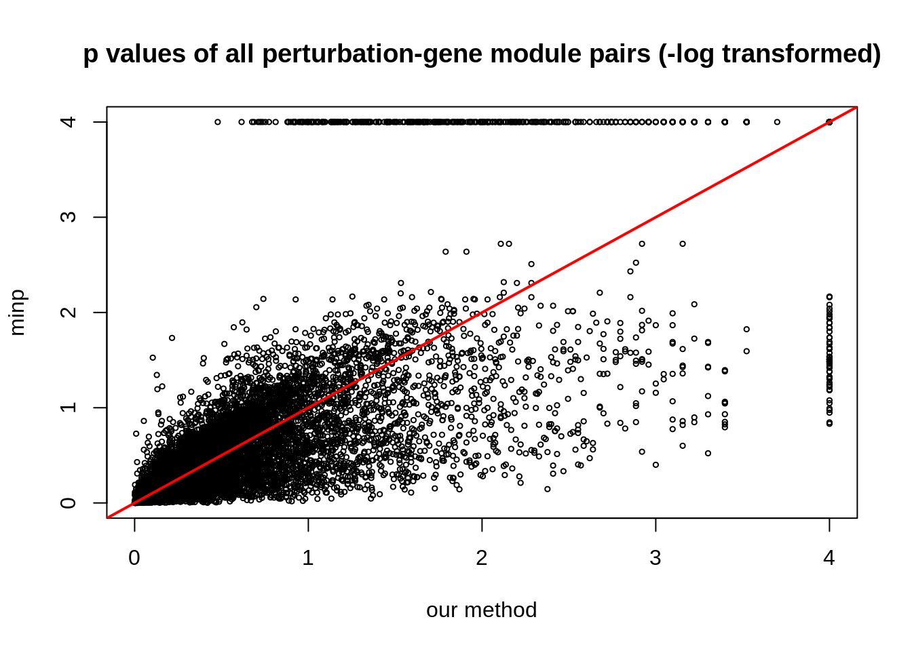
grna_assignment_matrix <-get_grna_assignments(
sceptre_object = sceptre_object
)[-207,-cell_to_filter]assignment_to_analyze<-matrix(as.numeric(grna_assignment_matrix[1,]),nrow=1)
prop<-estimate_propensity(assignment_to_analyze, covariate)
weight<-prop
weight[assignment_to_analyze==1] <- (1/prop[assignment_to_analyze==1])/sum(1/prop[assignment_to_analyze==1])
weight[assignment_to_analyze==0] <- (1/(1-prop[assignment_to_analyze==0]))/sum(1/(1-prop[assignment_to_analyze==0]))
balanced_covariate<-covariate$response_n_umis*weight
hist(balanced_covariate[assignment_to_analyze == 1],
breaks = length(covariate$response_n_umis[assignment_to_analyze == 1])/5,
col = rgb(1, 0, 0), # Add transparency
xlim = range(balanced_covariate),
main = "Histogram of Balanced Covariate by Assignment",
xlab = "Balanced Covariate",
ylab = "Frequency")
# Add the second histogram
hist(balanced_covariate[assignment_to_analyze == 0],
breaks = 1000,
col = rgb(0, 0, 1, 0.001), # Add transparency
add = TRUE)
# Add a legend
legend("topright",
legend = c("Assignment = 1", "Assignment = 0"),
fill = c(rgb(1, 0, 0,0.5), rgb(0, 0, 1, 0.5)))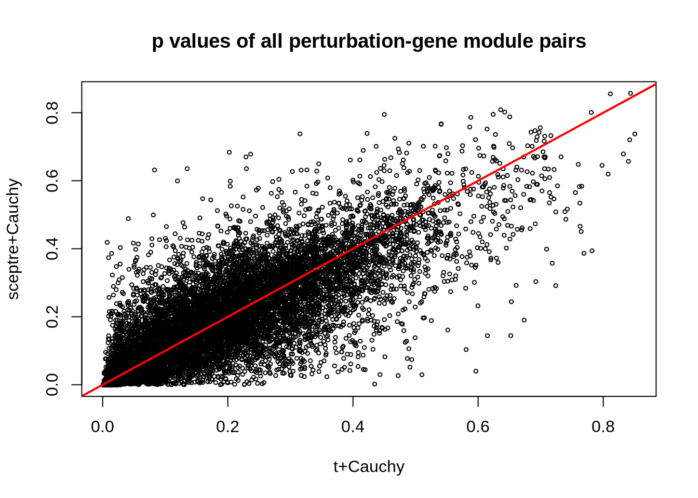
| Version | Author | Date |
|---|---|---|
| b29945c | jliucx | 2024-12-28 |
hist(covariate$response_n_umis[assignment_to_analyze == 1],
breaks = length(balanced_covariate[assignment_to_analyze == 1]) /5,
col = rgb(1, 0, 0, 0.5), # Add transparency
xlim = range(covariate$response_n_umis),
ylim = c(1,100),
main = "Histogram of Original Covariate by Assignment",
xlab = "Balanced Covariate",
ylab = "Frequency")
# Add the second histogram
hist(covariate$response_n_umis[assignment_to_analyze == 0],
breaks = 100,
col = rgb(0, 0, 1, 0.5), # Add transparency
add = TRUE)
# Add a legend
legend("topright",
legend = c("Assignment = 1", "Assignment = 0"),
fill = c(rgb(1, 0, 0, 0.5), rgb(0, 0, 1, 0.5)))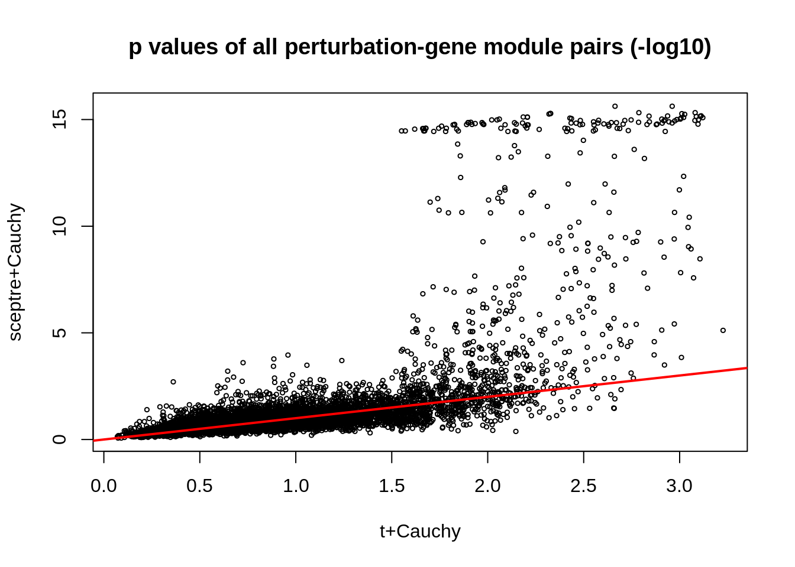
| Version | Author | Date |
|---|---|---|
| b29945c | jliucx | 2024-12-28 |
sessionInfo()R version 4.1.0 (2021-05-18)
Platform: x86_64-pc-linux-gnu (64-bit)
Running under: CentOS Linux 8
Matrix products: default
BLAS/LAPACK: /software/openblas-0.2.19-el8-x86_64/lib/libopenblas_haswellp-r0.2.19.so
locale:
[1] LC_CTYPE=en_US.UTF-8 LC_NUMERIC=C LC_TIME=C
[4] LC_COLLATE=C LC_MONETARY=C LC_MESSAGES=C
[7] LC_PAPER=C LC_NAME=C LC_ADDRESS=C
[10] LC_TELEPHONE=C LC_MEASUREMENT=C LC_IDENTIFICATION=C
attached base packages:
[1] parallel stats graphics grDevices utils datasets methods
[8] base
other attached packages:
[1] ACAT_0.91 tidyr_1.3.0 tibble_3.2.1
[4] ggplot2_3.5.1 eulerr_7.0.2 gridExtra_2.3
[7] heavytailcombtest_1.0.0 sgt_2.0 numDeriv_2016.8-1.1
[10] optimx_2023-10.21 peakRAM_1.0.2 BH_1.84.0-0
[13] Matrix_1.6-3 dplyr_1.1.4 readr_1.4.0
[16] sceptredata_0.99.0 sceptre_0.10.0 presto_1.0.0
[19] data.table_1.14.8 Rcpp_1.0.12 workflowr_1.7.1
loaded via a namespace (and not attached):
[1] httr_1.4.2 sass_0.4.9 jsonlite_1.8.7 R.utils_2.10.1
[5] bslib_0.7.0 getPass_0.2-2 highr_0.11 yaml_2.2.1
[9] pillar_1.9.0 lattice_0.22-5 glue_1.6.2 rmutil_1.1.10
[13] digest_0.6.33 promises_1.2.0.1 polyclip_1.10-6 colorspace_2.1-0
[17] htmltools_0.5.8.1 httpuv_1.6.1 R.oo_1.24.0 pkgconfig_2.0.3
[21] invgamma_1.1 purrr_1.0.2 mvtnorm_1.3-2 scales_1.3.0
[25] processx_3.8.4 whisker_0.4.1 later_1.2.0 pracma_2.4.4
[29] git2r_0.32.0 farver_2.1.1 generics_0.1.3 ellipsis_0.3.2
[33] cachem_1.0.8 withr_2.5.2 cli_3.6.1 magrittr_2.0.3
[37] crayon_1.5.2 evaluate_0.23 ps_1.7.5 R.methodsS3_1.8.2
[41] fs_1.6.3 fansi_1.0.5 tools_4.1.0 hms_1.1.0
[45] lifecycle_1.0.4 stringr_1.5.1 munsell_0.5.0 callr_3.7.6
[49] compiler_4.1.0 jquerylib_0.1.4 rlang_1.1.2 grid_4.1.0
[53] nloptr_1.2.2.2 rstudioapi_0.15.0 labeling_0.4.3 rmarkdown_2.27
[57] gtable_0.3.0 R6_2.5.1 knitr_1.48 fastmap_1.1.1
[61] utf8_1.2.1 rprojroot_2.0.4 polylabelr_0.2.0 stringi_1.6.2
[65] vctrs_0.6.4 tidyselect_1.2.0 xfun_0.45